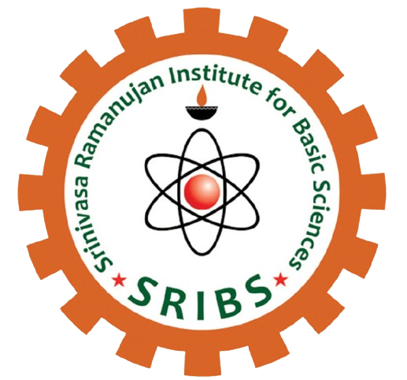

Postdoctoral Fellow
KSCSTE – Srinivasa Ramanujan Institute for Basic Sciences
Research Papers
Invited Talks
Conferences
Awards
Programmes Organised
Institutional Activities
During my stint at SRIBS (August 2024 – July 2026), I actively contributed to the academic, research and institutional development of the institute through original research, conference presentations, invited lectures, outreach programmes, organisation of academic events, institutional documentation and digital initiatives. This report presents a concise overview of the research achievements, academic activities and institutional responsibilities undertaken during my tenure as a Postdoctoral Fellow.
My research at SRIBS has focused primarily on Modular Forms, Siegel Modular Forms, Jacobi Forms, Half-Integral Weight Modular Forms, and related areas in analytic and algebraic number theory.
Generalizes the algebraicity results of Kohnen–Luca from elliptic modular forms to Siegel modular forms of genus two.
In this article, we prove the non-integrality of certain partial sums related with the Hecke eigenvalues of a Siegel eigen cusp form of degree two and weight $k$ for the group $\text{Sp}_4(\mathbb{Z})$. For such an eigenform $F$ (not lying in the Maass subspace) with eigenvalues $\lambda_F(n)$, we prove that when $j>\ell(k-3/2)$ there exists an integer $N$ such that the partial sums \[ I_{F,n,\ell,j} := \sum_{m=1}^{n} \frac{\lambda_F(m)^{\ell}}{m^{j}} \] are not algebraic integers for all $n\geq N$. This generalizes a result of Kohnen-Luca in the case of elliptic modular forms to the case of Siegel modular forms of genus two.
Introduces a self-adjoint operator on Jacobi forms and derives new characterisations of the Maass space through inner-product identities.
In this paper we show the existence of a self-adjoint operator on Jacobi forms by deriving an inner product relation that connects a Siegel newform $F$ in the Maass space of cusp forms of degree 2, weight $k$, level $M$ ($32|M$), character $\chi$ ($\chi$ and $\chi^2$ are primitive characters modulo $M$ and $M/2$ respectively) and the corresponding Jacobi newform $\phi$ in the space of Jacobi cusp forms of weight $k$, index $1$, level $M$ and character $\chi$. We also derive two characterisations pertaining to a degree two Siegel newform belongs to Maass space.
Studies multiplicity-one phenomena by investigating ratios of Hecke eigenvalues associated with genus two Siegel eigenforms.
Let $F$ and $G$ be two non zero Siegel eigen cusp forms of genus two, with their weights not necessarily be equal. Consider the set $R(F,G)= \{ x \in \mathbb{P}^1(\mathbb{C}) : x = [\lambda_F(p):\lambda_G(p)] \text{ for some prime } p \}$, where $\lambda_F(p)$ and $\lambda_G(p)$ are the eigenvalues of $F$ and $G$, respectively. We prove that, if the forms $F$ and $G$ are not lying in the Maass subspace and $R(F,G)$ is finite, then $F=cG$ for some constant $c$. This generalises the work of Choi-Lim to the case of Siegel modular forms of genus two.
Develops a newform theory for half-integral weight cusp forms of level 8N using Shimura–Shintani correspondences.
Let $k\geq2$ and $N$ be an odd and square free integer. Main aim of the paper is to construct explicit Shintani maps indexed by odd fundamental discriminants $D,((-1)^k D>0)$ on the space of cusp forms of weight $2k$, level $4N$ with trivial character. Using this and the trace relation derived by S. Niwa (which gives isomorphism between the space of cusp forms of weight $2k$, level $4N$ and the space of cusp forms of weight $k+1/2$, level $8N$) we prove that the subspace of newforms of weight $k+1/2$ for $\Gamma_{0}(8N)$ with trivial character satisfies the plus space condition: the $n$-th Fourier coefficient $a_f(n)=0$ whenever $(-1)^{k}n\equiv2,3\mod{4}$. Finally, we observe that the respective plus subspaces in $S_{k+1/2}\left(8N,\left(\frac{8}{\cdot}\right)\right)$ and $S_{k+1/2}\left(16N,\left(\frac{8}{\cdot}\right)\right)$ are trivial.
Academic engagement during the period included invited lectures, conference presentations, serving as a resource person, and participation in national and international workshops and conferences.
Berchman's Lecture Series in Mathematics
SB College, Changanassery, Kottayam
Jointly organized by SRIBS & St. Joseph's College
Irinjalakkuda, Thrissur
Interactive Session with PG Students
TKM College of Arts & Science, Kollam
TRADE Conference
Kerala School of Mathematics, Kozhikode
Celebrating Number Theory in India
IISER Pune
Conference: International Conference on Transcendence, Arithmetic and Diophantine Explorations (TRADE)
Venue: Kerala School of Mathematics, Kozhikode, Kerala
Invited Conference TalkConference: Celebrating Number Theory in India
In Honour of Prof. M. Ram Murty on his 70th Birthday
Venue: IISER Pune
Invited Conference TalkBeyond research, I actively contributed to the academic, outreach, documentation, and digital initiatives of SRIBS. These activities supported the institute's academic visibility, public engagement, and organizational development.
Assisted in planning and coordinating the institute colloquium series, including communication with speakers and event coordination.
View Details →Served as District Coordinator for the Kottayam district celebrations organised jointly by SRIBS, KSCSTE and DST.
View Event →Coordinated academic activities including quiz competitions and outreach programmes jointly organised by SRIBS.
View Event →Joint organiser responsible for academic coordination and execution of the programme.
View Event →Prepared and designed the Annual Report documenting research, outreach and institutional activities.
Compiled and designed quarterly newsletters highlighting academic programmes, research activities and institute developments.
Prepared monitoring reports and institutional documents for academic and administrative purposes.
Maintained and updated the official SRIBS website, including event reports, announcements and academic content.
Prepared digital publicity materials and managed dissemination of institute activities through official social media platforms.
Student: Maria Thomas
Institution: Assumption College, Changanassery
Tenure: Summer 2026
This project presents an introductory study of the irrationality of even zeta values associated with the Riemann zeta function. Beginning with the irrationality of the classical constants $e$, $\pi$, and $\pi^2$, it introduces the necessary background on sequences and infinite series before discussing the Riemann zeta function, the Basel problem, and the evaluation of $\zeta(2)$. The project provides an accessible introduction to the significance of special zeta values in number theory.
Student: Jomy Johny
Institution: Assumption College, Changanassery
Tenure: Summer 2026
This project studies the theory of continued fractions as representations of real numbers through nested fractions. It discusses their fundamental properties, their role in obtaining accurate rational approximations, and their applications in number theory and computer science, providing an elementary introduction to one of the classical topics in mathematics.
Student: Rajasree Raj
Institution: Assumption College, Changanassery
Tenure: Summer 2026
This project explores the distribution of prime numbers through classical arithmetic functions and the prime counting function $\pi(x)$. It discusses known estimates for $\pi(x)$, bounds for the $n$th prime $p_n$, and Bertrand's postulate, illustrating several important results concerning the occurrence of prime numbers.
Student: Ajay Sankar A
Institution: SB College, Changanassery
Tenure: Summer 2026
This project investigates the Lonely Runner Conjecture, a well-known open problem in number theory and combinatorics. It introduces the geometric and number-theoretic formulation of the conjecture, surveys important known results, and discusses its significance and connections to modern mathematical research.
The following recognitions were received during the reporting period for research excellence and academic contributions.
38th Kerala Science Congress
Scientist Delegate Category
37th Kerala Science Congress
Scientist Delegate Category
Nehru Arts & Science College, Kanhangad
The reporting period at KSCSTE–Srinivasa Ramanujan Institute for Basic Sciences has been marked by sustained growth in research, academic outreach, institutional engagement, and professional development. Alongside pursuing independent research in modular forms and analytic number theory, I actively contributed to strengthening the institute through programme coordination, documentation, website development, and student mentoring.
The opportunity to present research at national conferences, deliver invited lectures, organise academic programmes, prepare institutional reports, and mentor undergraduate students significantly enhanced my skills in scientific communication, academic leadership, and institutional collaboration.
These diverse responsibilities have broadened my perspective as a researcher and educator while providing valuable experience in the functioning of a modern research institute. The experiences gained during this period have laid a strong foundation for future academic and institutional responsibilities.